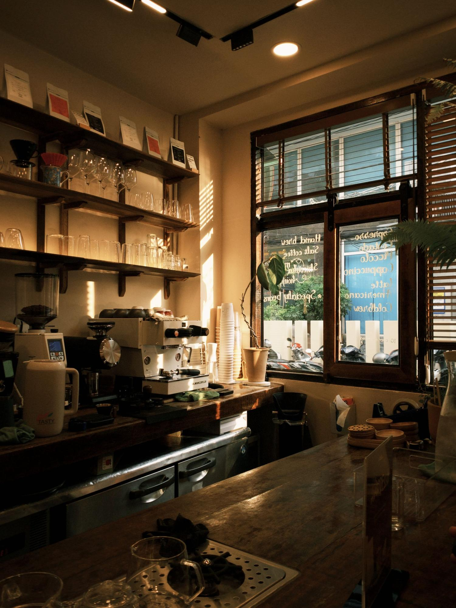
Slow coffee, soft light.
A small coffee house with good coffee, a short seasonal kitchen and somewhere quiet to sit.
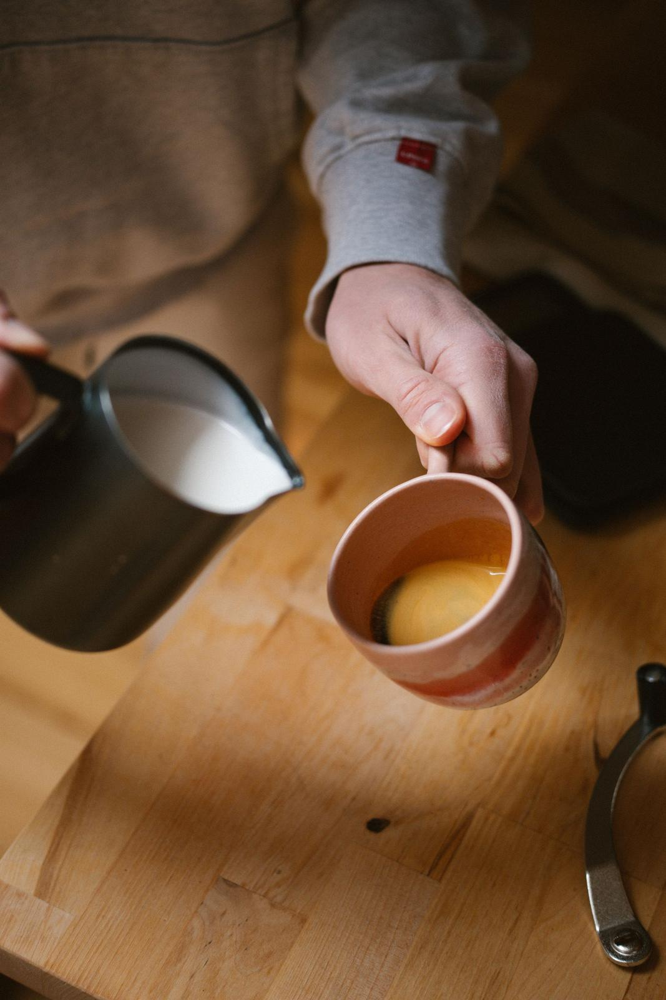

Espresso, filter and loose-leaf tea. Bakes from the oven each morning. Brunch until 2:30.
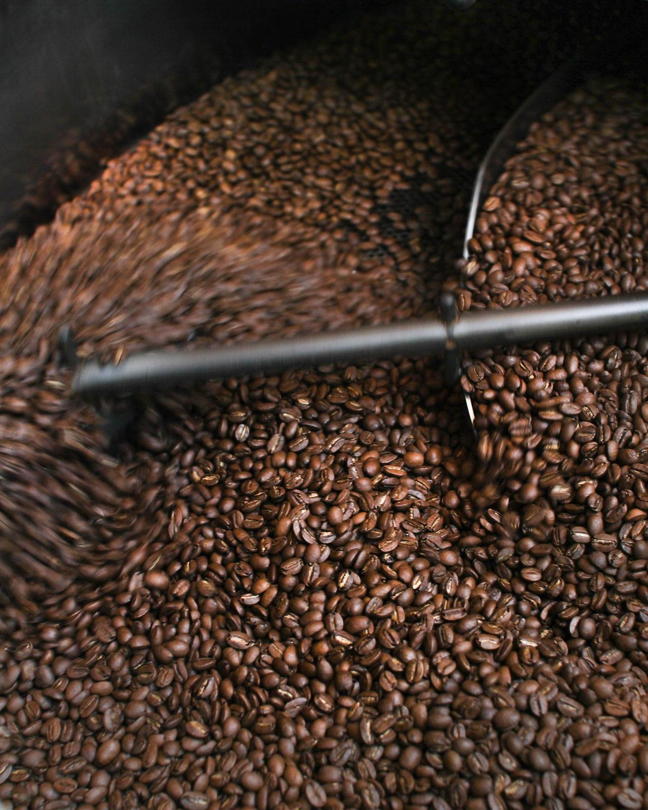
Our coffee
Roasted down the road, poured slowly.
Every bean we use is roasted in small batches by Hollow Lane Roastery, twenty minutes from the door. We cup each new lot together, pick what we like, and change the filter with the seasons.
On the grinder nowHouse espresso · Brazil and Colombia · chocolate, hazelnut, brown sugar
Where our coffee comes from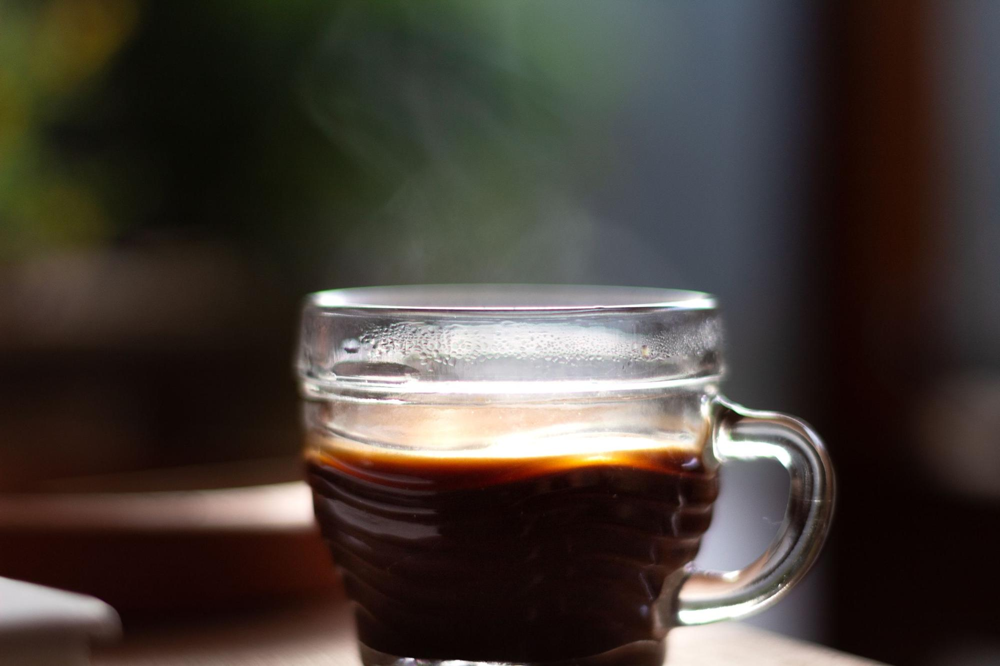
A sample quote from a regular goes here, in their own words.
Customer name Sample
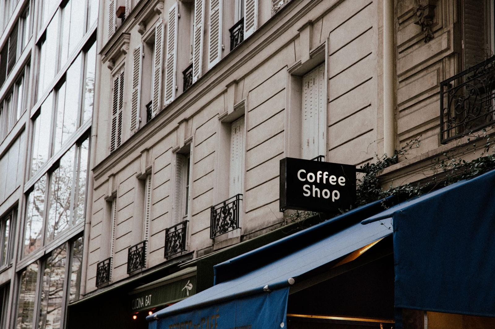
Visit
14 Sample StreetAnytown XX1 1XX
- Monday8am – 4pm
- Tuesday8am – 4pm
- Wednesday8am – 4pm
- Thursday8am – 4pm
- Friday8am – 4pm
- Saturday8:30am – 4pm
- Sunday9am – 3pm
Sample address and hours.
@silk.coffee
Instagram · placeholder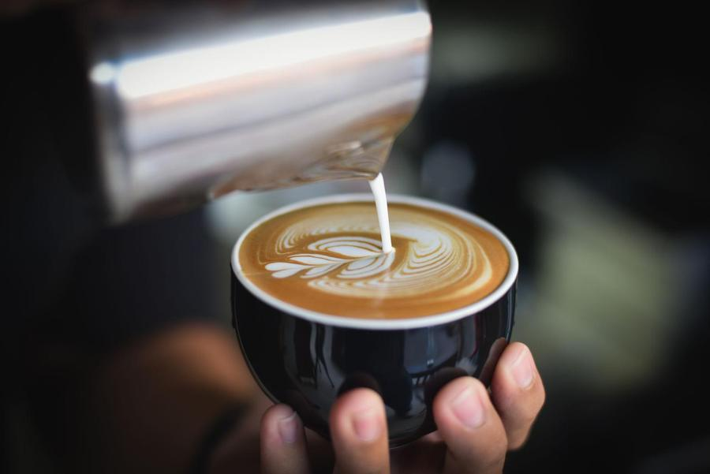
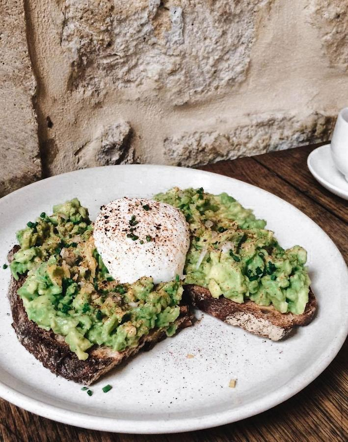
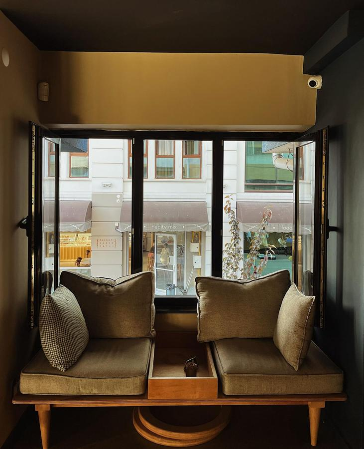
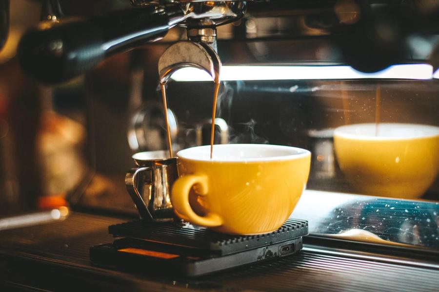
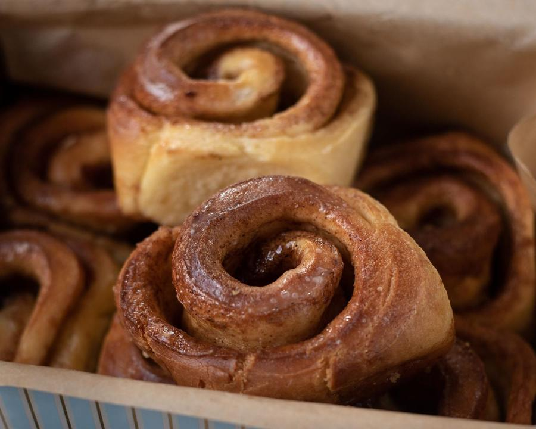
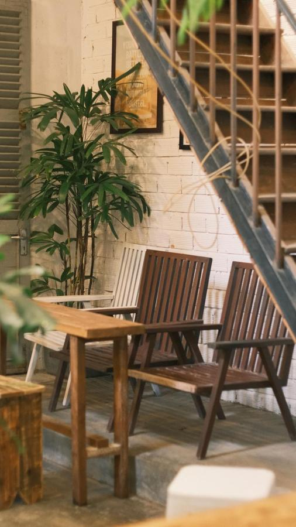